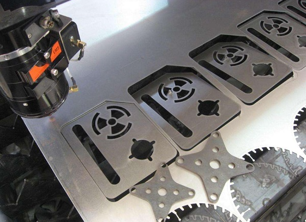
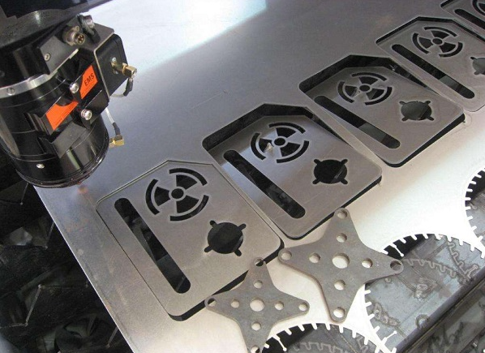

A. High Efficiency and Precision:
Laser cutting can achieve precise cutting of composite materials such as carbon fiber, whether for flat or
curved surfaces. During the laser cutting process, energy is concentrated, the heat-affected zone is small,
the cutting speed is fast, and the cutting quality is high, thus realizing efficient, high-precision processing,
greatly improving production efficiency.
B. Flexibility and Adaptability:
Carbon fiber laser cutting does not require physical contact, enabling non-contact processing, avoiding damage
and deformation to the material surface. The laser cutting machine can adjust parameters according to different
processing requirements, suitable for machining workpieces of various shapes, sizes, and thicknesses, with
strong adaptability.
Energy Saving and Environmental Protection:
Compared to traditional cutting methods, laser cutting does not need tools and does not produce cutting waste,
thus reducing energy consumption and environmental pollution. In addition, since only a small amount of energy
is required during laser cutting, it also significantly reduces the energy consumption of the equipment, in line
with the trend of energy conservation and environmental protection.
1. Aerospace:
Carbon fiber composites are widely used in the aerospace field due to their lightweight and high strength.
Laser cutting machines can precisely cut carbon fiber sheets to meet the stringent requirements for precision
and strength of aircraft components.
2. Automotive Industry:
In the field of new energy vehicles, carbon fiber is used to manufacture key components such as bodies and
chassis to reduce weight and improve vehicle fuel economy and safety. Laser cutting machines can achieve
high-precision cutting to meet the design requirements of automotive parts.
3. Medical Devices:
Carbon fiber composites are also used in the medical device field, such as making surgical instruments and
orthopedic appliances. Laser cutting machines can precisely cut complex-shaped carbon fiber parts to improve p
roduct accuracy and durability.
4. Military Defense:
Applications of carbon fiber composites in the military field include manufacturing lightweight armored
vehicles and weapon systems. Laser cutting machines can quickly and accurately cut carbon fiber sheets to meet
the demand for high-performance materials in military equipment.
a. High Precision:
Laser cutting machines feature multi-axis control technology, capable of achieving precise three-dimensional
irregular solid material cutting of carbon fiber, ensuring high standards of cutting dimensions .
b. High Flexibility:
Depending on different shapes and needs, by adjusting the cutting path and angle, it can realize the cutting
of irregular carbon fiber material, meeting various design requirements .
c. High Frequency, High Efficiency:
Carbon fiber laser cutting machines belong to non-contact cutting, which will not cause physical deformation
or damage to the workpiece surface, featuring high speed, high efficiency, etc., which can improve the
efficiency of carbon fiber cutting .
Stable Quality Control:
Carbon fiber laser cutting machines have real-time monitoring and automatic adjustment functions, which can
adjust cutting parameters and positions in time according to the encountered problem information during the
cutting process, ensuring the stability and feasibility of the cutting quality .
1. Product details
The turbine blade has a central symmetrical structure. 5052 aluminum alloy material is selected for CNC
machining, so that the product has good forming processing performance. The overall anodizing treatment makes
the surface of the processed product bright and beautiful, and the corrosion resistance, wear resistance and
hardness are further improved.
2. Processing process
Milling with three-axis and five-axis CNC machining center ensures that the surface of the product is connected
without cutting marks, and the deformation of the blade after machining is controlled within the accuracy range.
Turbine blades have a wide range of applications, and can be used for Marine engines, turbine parts, propeller
parts, automobile parts, motorcycles, parts, mechanical parts, scientific equipment, etc.
The performance level of turbine blades is an important symbol of the advanced level of engines. Aero engine is
a highly complex and precise thermal machinery, is the heart of the aircraft, the value of the engine accounts
for 20%-30% of the value of the whole machine. In aero engine, blade is a special part, it is a large number,
complex shape, high requirements, difficult to process, has always been the key to engine production.